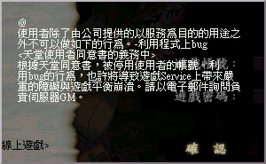

|
2001年7月17日
有玩家因複製道具而帳號遭鎖定

據本網得知，到目前為止，最少有四名玩家因為複製道具，或接受已複製的道具而帳號遭到鎖定，即玩家不能登入自己的帳號。
本網在此奉勸各位玩家，切勿以不當的行為去玩遊戲，因為閣下所有在遊戲中的行為皆有詳細記錄。所有利用伺服器漏動，或入侵伺服器而得到的利益，皆不能逃過伺服器的追查。另外本網亦希望伺服器方面能夠加緊阻塞漏洞，以防止某些玩家能夠從中取利。而各玩家亦有責任去阻止其他人和用漏洞來玩遊戲，例如不要接受來歷不明的道具，不要用真實世界的錢或點數去換道具等，而當發現有人利用Bug或程式漏動去玩遊戲時，亦應該即時向GM舉報。
其實，如果利用不當行為去玩遊戲，除了會影響伺服器運作外，亦會嚴重破壞遊戲的平衡性，及失去玩線上角色扮演遊戲的一份耕耘，一份收獲的意義。因此本網希望各玩家能夠用正當的方法，和其他玩家進行公平的比試。
|